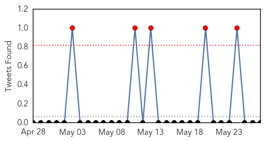

Cholera
30-Day Web Trend
7 alerts, 1 warnings
30-Day Twitter Trend
1 alerts, 0 warnings

Article Locations

Article Confidences

Top Articles:
- 0.995
- WHO update on Tanzania cholera crisis
- 0.978
- Social : $50M grant to improve access to drinking water
- 0.938
- Cholera outbreak among Burundi refugees in Tanzania slowing
- 0.871
- NewsRoomAmerica.com
- 0.836
- Tanzania cholera outbreak suddenly slows, U.N. says
- 0.786
- Two-thirds of Yemenis lack clean water
- 0.696
- Two-Thirds of Yemenis Without Clean Water Access: Oxfam
- 0.638
- Yemen news agency
- 0.517
- 16 mn in Yemen have no access to drinking water
Top Tweets:
- 0.514
- WHO thru the Tanzania Min of Health and Social Welfare has mobilized the deployment of 12 health experts to support cholera case mngmnt
MERS
30-Day Web Trend
6 alerts, 2 warnings
30-Day Twitter Trend
5 alerts, 0 warnings

Article Locations
Article Confidences

Top Articles:
- 0.999
- Health minister vows aggressive, flexible measures to fight MERS
- 0.999
- Health minister vows aggressive, flexible measures to fight MERS
- 0.998
- South Korea, Saudi Arabia confirm more MERS cases
- 0.998
- Five MERS cases are most outside Middle East-INSIDE Korea JoongAng Daily
- 0.998
- South Korea, Saudi Arabia confirm more MERS cases
- 0.994
- Doctor to head to S. Korea to study MERS-CoV: CDC
- 0.994
- Taiwan to send doctor to South Korea to learn about MERS-CoV
- 0.990
- MERS virus continues to spread in South Korea
- 0.982
- South Korea reports 2 new MERS cases
Top Tweets:
-
No tweets found for May 27, 2015